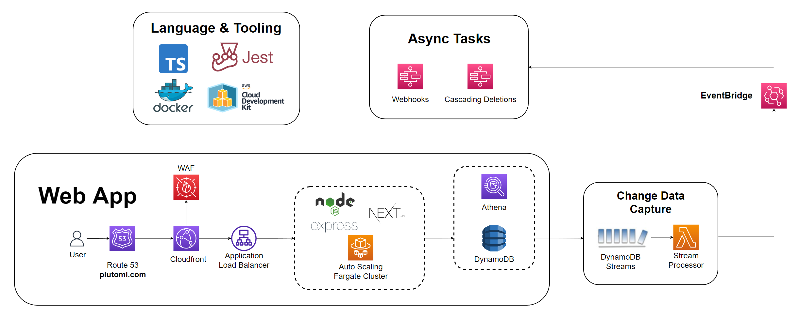

Plutomi is a multi-tenant applicant tracking system that streamlines your entire application process with automated workflows at any scale.

Having worked at a company that needed to recruit thousands of contractors every month, improving our acquisition flow at that scale became a challenge. Many processes had to be done manually because there just wasn’t an API available for it. We often hit limits and had to work around them with a myriad of webhooks, queues, and batch jobs to keep things running smoothly. It would have benefited us to have an open platform to contribute to and build upon and this project is our attempt to do just that.
You can create openings which people can apply to. An opening can be anything from a job, a location for a delivery company, or a program like a summer camp.
In these openings, you can create stages which are individual steps for your application. You can add questions for applicants to answer, and setup automatic move rules that determine where applicants go next depending on their answers or after a certain time period.
An opening for a delivery company might look like this:
Opening name: New York City
Stage order:
.env.development & .env.production files, see the .env.sample for the values required| Command | Function |
|---|---|
| npm run dev | Will deploy a copy of most the backend to AWS (Dynamo, Event Bridge, SQS, Step Functions, etc). The frontend & Express server run in localhost |
| npm run test | Will run tests |
| npm run deploy-prod | Will deploy everything to your production environment |
| npx cross-env NODE_ENV=(development or production) cdk deploy -e (development or production)-STACK_NAME | Will deploy a specific stack in the desired environment |
All infrastructure is managed by CDK and we use Jest for testing. Everything is written TypeScript and we would appreciate any assistance on types or tests as we’re definitely not the best 
The frontend is using NextJS and we have an Express app serving it from AWS Fargate.
We’re using a single table design for this project. If you’re new to DynamoDB, I created a playlist that will help you get accustomed to it. There are videos from Alex Debrie, Rick Houlihan, Pete Naylor, and an awesome talk by Kai Zhao on adaptive capacity.
There are some asynchronous events that are made possible by the Dynamo streams:
Cascading deletions - When deleting an entity that has child items such as an org and its openings or an opening and its stages, the parent is deleted right away but the children will be deleted asynchronously with a state machine. At the top of the workflow there is a choice state which figures out which entity was deleted. It then retrieves all of the top-level child items for that entity (deleting an opening only retrieves the stages, but not the applicants in those stages). The state machine maps through each item and deletes them. This causes the state machine to be called again: Dynamo stream -> EventBridge -> StepFunction with the newly deleted entity.
Webhooks - Any applicant events (INSERT, MODIFY, or DELETE) trigger another state machine that sends the entire event payload that we received from Dynamo to your configured URL.
We’re also using Athena to query Dynamo with plain old SQL using Federated Queries - (video). We haven’t figured out how to add a data source using CDK but this is very simple. Once deployed, click Connect Data Source and select DynamoDB. Choose a name and then select the lambda function that is created in the stack: NODE_ENV-athena-dynamo-query-function
To make a contribution, submit a pull request into the main branch. You will be asked to sign a Contributor License Agreement for your PR. You’ll only have to do this once.
This project tries to follow Semantic Pull Requests some what. Your PR title should have the following format:
| Type | Description |
|---|---|
| feat: OR enhancement: | Added a new feature or enhancement |
| fix: | Squashed some bugs! |
| docs: | Updated documentation, readme, examples |
| test: | Added / modified tests |
| chore: | Maintenance, refactoring, etc. If it doesn’t fit above, it goes here |
Example: fix: Removed the double modals popping up on login
This project is licensed under the Apache 2.0 license
Thanks goes to these wonderful people (emoji key):
 Jose Valerio 💻 🚇 🚧 |
 praguru14 💻 🚧 |
 Jose Valerio 💻 🚧 🐛 |
 Jeremy Trenchard 💻 |
This project follows the all-contributors specification. Contributions of any kind welcome!
{kind=link}